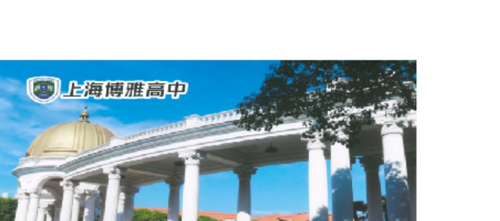
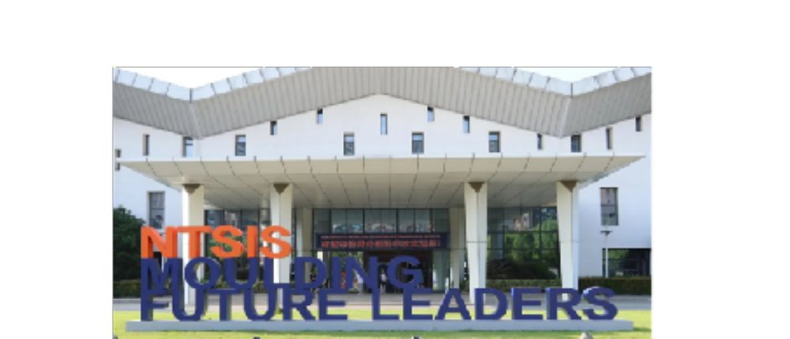
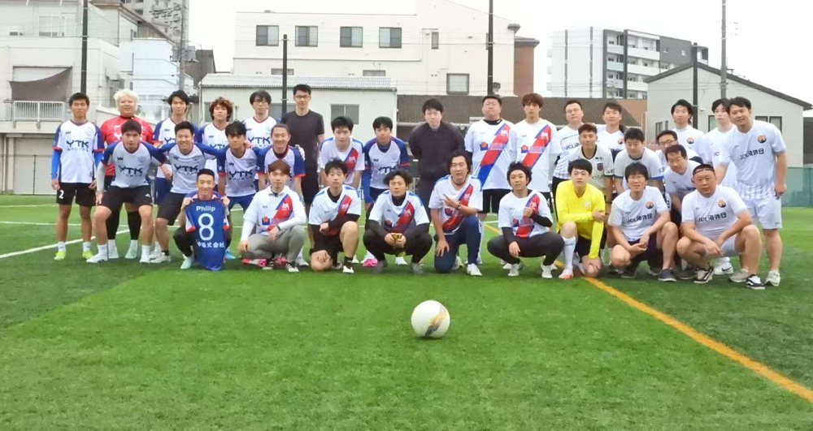
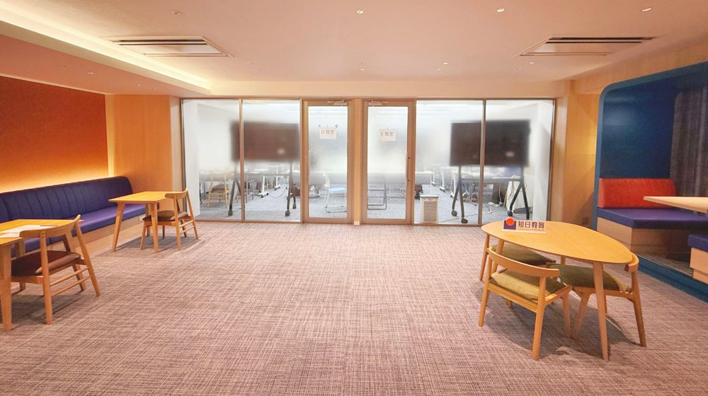

留学生の送り出しから、採用・人材紹介、法人研修まで。日中の拠点ネットワークに根ざした知日株式会社が、貴学・貴社の課題に伴走します。
お立場ごとに、最適なご提案窓口へご案内します。
「留学」で培った日中両国のネットワークを、大学・企業の課題解決に展開しています。
2013年の創業以来、日中をまたぐ教育・人材の実績を積み重ねてきました。
中国から来た学生が、知日塾・知日美術で日本のトップ大学・美大へ。実際の合格事例の一部をご紹介します。
日中をまたぐ一貫モデルと多角化した教育事業で、模倣の難しいポジションを築いています。
日本の外国人留学生数は過去最多を更新。中長期で続く構造的な追い風を捉えています。
中国6都市の現地網 × 日本の教育・出口。模倣の難しいクロスボーダー・パイプライン。
進学予備校・日本語学校・専修学校・人材・研修。単一事業に依存しない構造です。
在籍4,530名+・提携大学60校+・社員256名+。安定した運営基盤を持ちます。
募集→教育→進学→就職を内製化し、一人あたりの価値（LTV）を最大化します。
東京大学公共政策・慶應義塾大学経済・元リクルートの代表が事業を牽引します。
募集から進学・契約・拠点運営までを、自社開発の管理プラットフォーム「chinichi OS」で一元化。多拠点・多ブランドの運営を可視化・標準化し、品質とスピードを両立しています。
出願から合格・入学後のフォローまで、学生情報と進捗をブランド横断で一元管理します。
問い合わせから成約までをパイプラインで可視化。対応とKPIを標準化し、機会損失を防ぎます。
契約書・入金・返金を、既存のドライブ／クラウドと連携して安全かつ追跡可能に管理します。
多拠点の教室・スケジュールを横断管理。外部校（専門学校・語学学校）との教室占用連携APIも提供します。
学生向けネイティブアプリとプッシュ通知、社内通知（企業向けメッセージ連携）で、現場の連絡を高速化します。
在籍・合格・運営KPIを横断で可視化し、経営と投資の意思決定を支えます。
入学者数・卒業者数・社員数のいずれも、右肩上がりで拡大を続けています。
中国での募集から日本での教育・進学・キャリアまで。一気通貫だからこそ、質の高い人材を安定して輩出できます。
中国6都市の拠点で、目的に合う学生を募集・選抜。
知日塾・SGG外語学院で日本語と専門分野の基礎を養成。
志望校に合わせた出願・面接対策で大学・大学院へ。
日本企業への人材紹介・定着支援でキャリアを後押し。
進学予備校から日本語学校、専修学校、そして中国の国際高校まで。日中にまたがる教育事業体で「日本に来てよかった」を増やします。
| グループ | 知日教育グループ（CHINICHI EDUCATION GROUP） |
|---|---|
| 商号 | 知日株式会社（CHINICHI Inc.） |
| 創業 | 2013年 |
| 事業内容 | 留学・進学支援／大学提携・留学生送り出し／人材紹介・採用支援／法人語学研修／学校運営 |
| 運営ブランド | 知日塾・知日美術（CHIART）・知日音楽（CHIMUSIC）・知日理工塾・中央ゼミナール・神奈川柔整鍼灸専門学校・SGG外語学院・元気体育（Genki Sports）・CHICASA・CHICare |
| 法人窓口 | 03-6205-9570（平日 10:00–19:00） |
| SGG外語学院 | 03-6233-9963 |
両国に拠点を持つことで、現地での集客・選抜から、日本での教育・定着支援までを一気通貫で行えます。

中国出身。2012年に来日し、2013年、日本語学校に通いながら知日塾を創業。翌年に大学へ進学し、慶應義塾大学経済学部、東京大学公共政策大学院で学びました。知日塾では8年にわたり講師を務め、現在はグループ全般のマネジメントを担っています。
前職の株式会社リクルート（ネットマーケ室）では、学び領域の事業再生やブライダル領域のWebマーケティングに従事。日中間の教育・人材・企業の交流を軸に、深セン証券取引所やSVV（VC）、insta360など中国の企業・投資家と、日本の産官学とのオープンイノベーションを推進してきました。
知日株式会社は、知日教育グループの一員として「中国の優秀な人材」と「日本の大学・企業」をつなぐことを使命としています。留学生の送り出しから、採用・人材紹介、法人研修まで——日中両国に根ざしたネットワークと現場で培った知見をもって、提携先の皆さまの成長に伴走します。
「学生にもっと親身な指導をする塾」から始まり、日中をまたぐ教育グループへ。
創業。「学生にもっと親身な指導をする塾」を理念に、知日株式会社を東京で設立。新大久保で知日塾をスタート。

高田馬場に最初の教室を開設。

美術専門ブランド 知日美術（CHIART）を設立。
初年度の文理コース受講生が100%合格。指導の実績を確立。

東京に美術専門校舎（CHIART STUDIO）を増設。
中国総本部を成都に開設。日中をまたぐ双拠点体制へ。

指導実績が累計1,000名を突破。教育部主催の中国国際教育展（CEE）に招待出展。
音楽専門ブランド 知日音楽（CHIMUSIC）を設立。
コロナ禍、全学科でオンライン同時双方向授業を開始。
日本の語学学校 SGG外語学院（旧 渋谷外語学院）を子会社化。中国で民営学校の運営認可（弁学許可証）を正式取得。
武漢に直営校を開設。「2022年度 影響力 留学サービスブランド」を受賞。
大阪・京都に直営校を開設。不動産ブランド CHI-CASA、在日華人向け心理ケアブランド CHICARE を設立。
学校法人 羽場学園が運営する専門学校「中央ゼミナール」がグループ校に。上海に直営校を開校。
学校法人 平井学園が運営する神奈川柔整鍼灸専門学校がグループ校に。広州・杭州に直営校を開校。
「日本に来てよかった」を増やすを掲げ、留学から進学・就職・人材・研修まで、学生の将来をつくる教育グループへ。
日本3都市・中国6都市に校舎を構え、連携の国際高校まで。日中をまたぐ拠点で一貫支援を実現します。






提携・採用・研修・進出に関するご相談、資料請求を承ります。
担当者より2営業日以内にご連絡いたします。